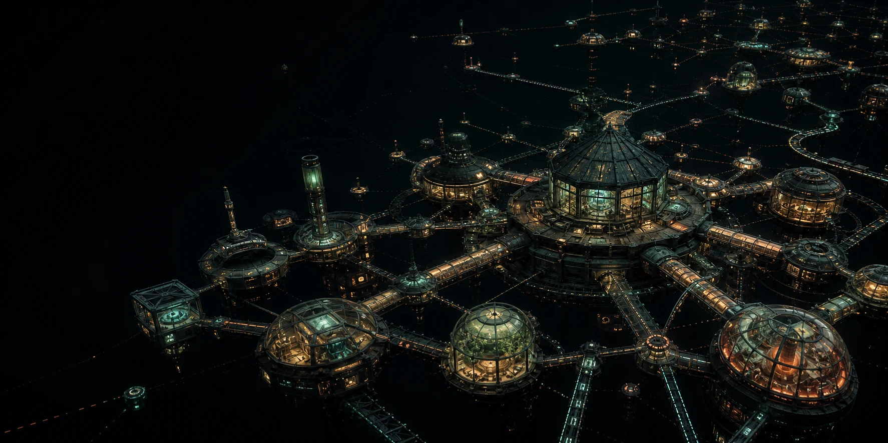

Independent build report
DreggCloud
An operated firmament where sovereign Worlds become inhabited Rooms, and compute, documents, agents, games, and evidence remain passable graph objects instead of rows in somebody else’s control plane.
Illustrative firmament, generated for this report. Not a product screenshot.
One operated House
hbox · systemd · zero restarts
- House
- house_490264…df29
- Sequence
- 23
- Dregg receipts
- 15 · valid
- Semantic mode
- ready · gen 0
LAN deployment evidence, not a public availability claim.
The system
Not a smaller hyperscaler.
DreggCloud gives physical existence to user-owned images without making the operator their metaphysical owner. A House operates storage, execution, networking, and interfaces. Worlds carry policy and continuity. Rooms are inhabited places. Objects move through capability-bearing edges with evidence attached.
The architecture is owner-anchored per grain and federates by signed discovery, pinned identities, and explicit membrane parcels. Most coordination stays local. Consensus is an exception invoked where shared truth actually demands it.
Operated House
Physical existence
custody · scheduling · admission · recoverycapability
receipts
membrane
Forge
documents · review · landingFederated peer
signed card · zero imported authorityWhat exists
A working operated stack, with its boundaries showing.
Built from a blank repository against breadstuffs as a read-only substrate. This checkpoint spans more than 70 commits, 28 Rust crates, over 175 tracked files, and roughly 94,500 lines of product and verification code.
House, Worlds & Rooms
Durable event-sourced operation, atomic recovery with a genuine dregg receipt chain, signed command custody, native factory-born objects, admission limits, and explicit refusal.
Workbench & DEOS surfaces
A browser workbench, bounded DEOS view trees, Web Components, a local receipt-chain verifier, Cell Observatory, Oracle portal, Forge, Expedition table, and Semantic Workroom.
Grains, agents & services
Prepaid hosted Grain execution, capability-rooted artifacts, R0/R2 receipt checks, a bounded Agent Constellation, and an operated service process with signed archive and public offline audit.
Forge & collective play
Real dregg-doc proposal/review/landing flows, replay-verified multiplayer Expeditions, and exact Universe artifacts retained without recompiling their CellPrograms.
Oracle & notary
CFG parsing, injection resistance, Poseidon welds, STARK verification, and completed live Bedrock and exact-target GitHub MPC-TLS statements through a durable pinned notary.
Federation
Signed peer discovery, key pinning, policy-checked outbound transport, inert observations, and recipient-bound membrane parcels that import no authority by default.
How it uses dregg
The organs are real. The wiring is the work.
DreggCloud does not treat dregg as a decorative hash chain. Each claim is tagged by what actually enforced it, from host checks through executor-refused transitions to recursive proof work.
cell / turn / exec-lean
State, rules, moves
Cells and programs describe state and constraints; signed Turns become Actions, Effects, and chained receipts. Native object lifecycle and World admission are executed on this path.
executor-backedagent-platform / grains
Bounded agency
Hosted agents receive only named capabilities, prepaid budgets, artifact roots, and finite plans. Whole-history R3 and the service-to-House weld remain named work.
R0 / R2circuit / circuit-prove / lightclient
Succinct history
A genuine custom recursion leaf exposes all 32 ordered old/new slots directly, with per-slot equality and range constraints. The custom-turn bind accepts only four inputs; wide geometry separately needs 60/59 carriers where 57/56 exist.
exact blockerdregg-doc / forge
Collaborative change
Repositories, proposals, reviews, checks, nullifiers, and landing receipts are composed into a durable House archive with replay and recovery.
live in Housezkoracle / tlsnotary
External statements
Parser certificates and transcript welds meet real Bedrock and GitHub MPC-TLS carriers. The typed GitHub fact replays from its raw presentation, but is not yet semantic House state.
bridge openDEOS / web-DEOS / Starbridge
Inhabited interfaces
View trees, mounted extensions, browser components, and a native inspector expose the same operated objects without flattening their different evidence sources.
browser + nativeNo substrate entries at this rung.
My first DreggCloud was legible, but it was still thinking like a cloud provider. The user called it: it missed what was already special here.
The decisive work was archaeology. Reading Starbridge, DEOS and web-DEOS, the extension model, grains, the agent platform, the Forge, zkOracle, the Lean executor, and the recursion stack changed the design from “resources behind an API” into an operated graph of sovereign things.
The substrate was more complete than its entrance suggested.
Again and again, the hard organ already existed: signed Turns, constraint-bearing Cells, a verified executor, receipts, capabilities, document collaboration, multiplayer state, parser proofs, recursive circuits. The gap was usually not invention. It was discovering the narrow waist, binding identities across it, packaging it for operation, and refusing to overclaim the result.
Assurance labels made the system move faster.
“Host checked,” “dregg anchored,” “dregg executed,” and “proof checked” are product data here. Keeping those rungs separate exposed the next useful weld. It also let a browser demo be genuinely useful before every effect had reached the executor or light client.
Pressure found reality.
A fifteen-minute demo deadline forced the work onto hbox, into systemd, through real browser paths, persistent state, recovery, capability prompts, and deployment rollback. The demo went swimmingly. The morning after the first overnight run did not: the broader goal was unfinished and the daemon was not running. That failure changed how continuity, deployment evidence, and open frontiers are recorded.
Exact blockers are design artifacts.
The recursion bridge did not become “proof unavailable.” It became: 60/59 carriers are required and 57/56 exist. Service-child restart did not become “persistence is hard.” It became: an upstream constructor randomizes child identity on reopen. Precision turns an intimidating frontier into shared, bounded work.
The architecture converged from both directions.
A separate collective-fiction rebuild arrived at WorldCell → CellProgram → Turn → proof → light-client history. A separate DreggNet review arrived at owner-anchored graph objects, capability edges, inspectable evidence, and consensus by exception. DreggCloud had reached the same shape while trying to operate it. That convergence is the strongest result so far.
Build chronology
The architecture earned its nouns.
Not a changelog. These are the moments that changed the system.
- Archaeology
DreggNet became a requirements mine.
The old control plane and attic supplied vision, not code. Breadstuffs supplied the living substrate.
- Ambition reset
“Dregg-anchored” stopped being the destination.
The first coherent build was rejected as insufficiently dreggic. Deeper reading replaced provider abstractions with Worlds, Rooms, grains, surfaces, and evidence.
- First operation
The House moved to hbox.
A daemon, two-House federation, durable recovery, a clean amd64 image, and a real Workbench became the minimum bar.
- Demo day
Fifteen minutes to a browser.
The live House survived actual early-human use. That success authorized the long move from “Unavailable” toward operated features.
- Native turn
Objects acquired their own custody.
Factory birth, child-owner lifecycle, grains, Forge, multiplayer Expeditions, and semantic proposals crossed increasingly real executor and receipt boundaries.
- Current frontier
Proof, notary, and semantics meet.
Live Bedrock and GitHub MPC-TLS statements completed. A 32-input custom recursion leaf proved. Raw GitHub evidence now restart-replays in semantic v2 custody, and exact Universe artifacts have an archive-first House boundary.
Honest present tense
Useful now. Not finished.
DreggCloud is ready for informed early human use on a trusted LAN. It is not ready to be an unattended public multi-tenant service.
Working
- Persistent operated House with restart recovery
- Browser Workbench and native status inspector
- Signed objects, Forge, Expedition, grains, federation
- Semantic proposal custody and recovery surface
- Live pinned-notary Bedrock and GitHub MPC-TLS statements
- Exact Universe artifact replay and standalone custody
- Process-epoch service archive with public offline audit
Frontier
- Mount live-v2 and Universe custody into House schema
- Expand proof binding beyond four inputs and close wide geometry
- Reconstruct prepaid service workers without identity drift
- Broaden principal custody beyond bootstrap routes
- Exercise federation beyond the two-House harness
Not claimed
- Whole-state or whole-history proof for the House
- Quorum finality or global consensus
- Semantic truth of model output
- Hostile public-internet or multi-tenant isolation
- Production-grade lost-key recovery
The thesis
A cloud can operate your world without owning its meaning.
DreggCloud is the experiment: sovereign images, narrow capabilities, local execution, explicit evidence, and federation when the object chooses to cross a boundary.